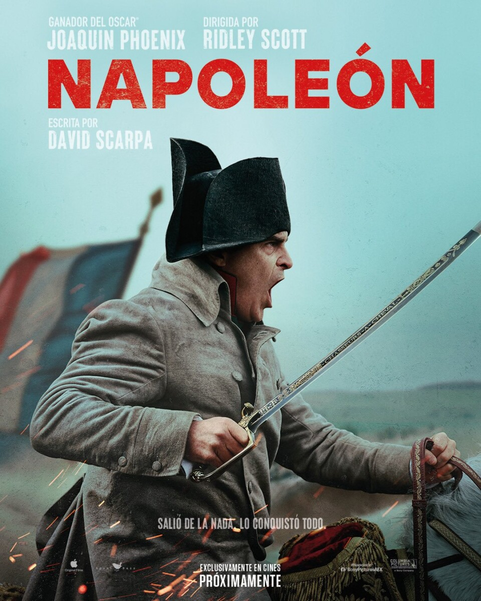

[KINOüé¨]
"Chłopi" - reżyseria: DK Welchman, Hugh Welchman
"Chłopi" - reżyseria: Michael Mann
"Czas krawawego księżyca" - reżyseria: Martin Scorsese
"Pierwszy gol" - reżyseria: Taika Waititi
"Pieśni wielorybów" - reżyseria: Jean-Albert Lievre

"Napoleon" - reżyseria: Ridley Scott